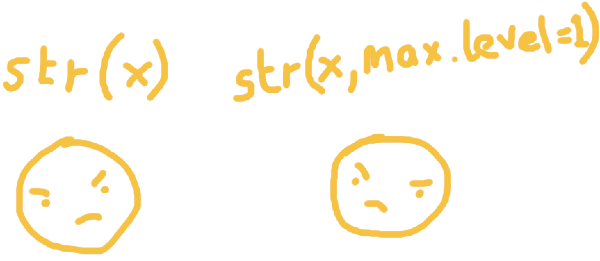

nested_list <- list(
x = list(x1 = 1:3, x2 = list(x3 = 4:6, x4 = 7:9)),
y = list(y1 = list(y2 = list(y3 = mtcars))),
z = list(z1 = beaver1, z2 = list(z4 = 100, z5 = chickwts), z3 = list(z5 = 1))
)
tl;dr
Some (lesser-known?) arguments to some common base-R functions.
Getting argumentative
There’s been a recent glut of posts about useful base-R functions, like the ones by Maëlle, Isabella and Yihui.
I bring you a twist on the theme. Four useful arguments from four everyday base functions:
max.levelinstr()ninprint()include.onlyinlibrary()dropin`[`
Feel free to move on if you know all of these.
Structural integrity
str() prints an object’s structure. It can be especially helpful for viewing lists in a compact hierarchical fashion. Consider this nested list:
Here’s the output we get from a simple str() call:
str(nested_list)List of 3
$ x:List of 2
..$ x1: int [1:3] 1 2 3
..$ x2:List of 2
.. ..$ x3: int [1:3] 4 5 6
.. ..$ x4: int [1:3] 7 8 9
$ y:List of 1
..$ y1:List of 1
.. ..$ y2:List of 1
.. .. ..$ y3:'data.frame': 32 obs. of 11 variables:
.. .. .. ..$ mpg : num [1:32] 21 21 22.8 21.4 18.7 18.1 14.3 24.4 22.8 19.2 ...
.. .. .. ..$ cyl : num [1:32] 6 6 4 6 8 6 8 4 4 6 ...
.. .. .. ..$ disp: num [1:32] 160 160 108 258 360 ...
.. .. .. ..$ hp : num [1:32] 110 110 93 110 175 105 245 62 95 123 ...
.. .. .. ..$ drat: num [1:32] 3.9 3.9 3.85 3.08 3.15 2.76 3.21 3.69 3.92 3.92 ...
.. .. .. ..$ wt : num [1:32] 2.62 2.88 2.32 3.21 3.44 ...
.. .. .. ..$ qsec: num [1:32] 16.5 17 18.6 19.4 17 ...
.. .. .. ..$ vs : num [1:32] 0 0 1 1 0 1 0 1 1 1 ...
.. .. .. ..$ am : num [1:32] 1 1 1 0 0 0 0 0 0 0 ...
.. .. .. ..$ gear: num [1:32] 4 4 4 3 3 3 3 4 4 4 ...
.. .. .. ..$ carb: num [1:32] 4 4 1 1 2 1 4 2 2 4 ...
$ z:List of 3
..$ z1:'data.frame': 114 obs. of 4 variables:
.. ..$ day : num [1:114] 346 346 346 346 346 346 346 346 346 346 ...
.. ..$ time : num [1:114] 840 850 900 910 920 930 940 950 1000 1010 ...
.. ..$ temp : num [1:114] 36.3 36.3 36.4 36.4 36.5 ...
.. ..$ activ: num [1:114] 0 0 0 0 0 0 0 0 0 0 ...
..$ z2:List of 2
.. ..$ z4: num 100
.. ..$ z5:'data.frame': 71 obs. of 2 variables:
.. .. ..$ weight: num [1:71] 179 160 136 227 217 168 108 124 143 140 ...
.. .. ..$ feed : Factor w/ 6 levels "casein","horsebean",..: 2 2 2 2 2 2 2 2 2 2 ...
..$ z3:List of 1
.. ..$ z5: num 1Oof, that’s a little bit too much information to flood my console with.
Luckily we can use the max.level argument to restrict the depth to which the list is printed. Here’s the top level only, which has a depth of 1:
str(nested_list, max.level = 1)List of 3
$ x:List of 2
$ y:List of 1
$ z:List of 3Now we have a very high-level overview: the object is a list containing three sub-lists of particular lengths.
Let’s go deeper.
str(nested_list, max.level = 2)List of 3
$ x:List of 2
..$ x1: int [1:3] 1 2 3
..$ x2:List of 2
$ y:List of 1
..$ y1:List of 1
$ z:List of 3
..$ z1:'data.frame': 114 obs. of 4 variables:
..$ z2:List of 2
..$ z3:List of 1Now we’ve unpeeled the next layer of the onion and can see that the sub-lists are made up of a vector, a data.frame and yet more lists.
For me, this is a nice way to get a sense of structure without seeing the entire content. I also think it beats the interactive list View() in RStudio as well, which can’t be opened to an arbitrary depth in one go1.
Carriage feed
print() is a ubiquitous function across most programming languages. In R, you might just type an object’s name to show it. Here’s a tibble with 21 rows to demonstrate.
chick_tbl <- tibble::as_tibble(ChickWeight[1:21, ])
chick_tbl# A tibble: 21 × 4
weight Time Chick Diet
<dbl> <dbl> <ord> <fct>
1 42 0 1 1
2 51 2 1 1
3 59 4 1 1
4 64 6 1 1
5 76 8 1 1
6 93 10 1 1
7 106 12 1 1
8 125 14 1 1
9 149 16 1 1
10 171 18 1 1
# ℹ 11 more rowsYou might use head() on a data.frame to prevent printing the whole thing, which defaults to showing 6 rows. Tibbles are truncated by default to 10, but a nice feature is that they’ll show a few more if there’s slightly more than 10 rows total. But what if you want more control?
Well, in both print() and head() is the n argument. No surprise: it lets you select n number of data.frame or tibble rows to show in the console.
I particularly like this for inspecting the entirety of a small tibble that’s been truncated by default. I’ll sometimes find myself doing this:
print(chick_tbl, n = Inf)# A tibble: 21 × 4
weight Time Chick Diet
<dbl> <dbl> <ord> <fct>
1 42 0 1 1
2 51 2 1 1
3 59 4 1 1
4 64 6 1 1
5 76 8 1 1
6 93 10 1 1
7 106 12 1 1
8 125 14 1 1
9 149 16 1 1
10 171 18 1 1
11 199 20 1 1
12 205 21 1 1
13 40 0 2 1
14 49 2 2 1
15 58 4 2 1
16 72 6 2 1
17 84 8 2 1
18 103 10 2 1
19 122 12 2 1
20 138 14 2 1
21 162 16 2 1 You can set an option() to see more tibble rows by default, but I’m usually okay with its normal truncating behaviour. Using n is a convenience when I need it.
Library check out
library() calls are a staple of R scripts. Let’s say I’m attaching the {lme4} package because I want to use the famous cake data set (thanks Rasmus2).
library(lme4, quietly = TRUE)Aha, no, it’s not the quietly argument I want to talk about3, though it is handy for stopping messages from being printed.
Of course, what library() does is let you access objects—like functions and data sets—from a named package. How many objects did we attach from {lme4}?
length(ls("package:lme4"))[1] 102Blimey, all we wanted was cake. But actually, we can be more selective with library() using the include.only argument (note that you can exclude as well).
detach("package:lme4")
library(lme4, include.only = "cake")
ls("package:lme4")[1] "cake"Why would you want to do this? This can keep your environment tidy—if that’s something you care about—but also helps prevent conflicts between objects that have the same name. For example, {dplyr}’s filter() function masks stats::filter().
This is also more explicit. People reading your script can see all the functions you’ve pulled in from each package by looking at your library() calls 4. If I see cake referenced in your script but can’t see how it was derived, I can look at the library() call to see that you imported it from {lme4}.
At worst, this might be a nice thing for Python users, who love to from x import y.
Score a drop goal
The square bracket, `[`, is a function5 for extracting elements out of objects, like rows and columns of a data.frame. Of course, it’s typically used as a pair of square brackets.
So the following will give you the first three rows of the cake data.frame for the columns temp and angle.
cake[1:3, c("temp", "angle")] temp angle
1 175 42
2 185 46
3 195 47What happens when you select a single column? You get one column back, right?
cake[1:3, "temp"][1] 175 185 195Ha, lol, no. You get a vector. This might be a problem if you’re passing column names into `[` programmatically and you’re always expecting a data.frame as output.
Luckily, you can guard against this by ensuring the returned doesn’t drop to its simplest dimension.
cake[1:3, "angle", drop = FALSE] angle
1 42
2 46
3 47I can see how a third argument inside the square brackets may look spooky if you thought you could only pass two when working on a data.frame6.
Mutual agreement
These were unlikely to have blown your mind, especially if you’re a seasoned user. But I’ve live-coded recently with some folks who hadn’t seen them before. Maybe you haven’t either.
Let me know if you want to argue your case for some other under-appreciated arguments.
Environment
Session info
Last rendered: 2024-02-03 21:25:20 GMTR version 4.3.1 (2023-06-16)
Platform: aarch64-apple-darwin20 (64-bit)
Running under: macOS Ventura 13.2.1
Matrix products: default
BLAS: /Library/Frameworks/R.framework/Versions/4.3-arm64/Resources/lib/libRblas.0.dylib
LAPACK: /Library/Frameworks/R.framework/Versions/4.3-arm64/Resources/lib/libRlapack.dylib; LAPACK version 3.11.0
locale:
[1] en_US.UTF-8/en_US.UTF-8/en_US.UTF-8/C/en_US.UTF-8/en_US.UTF-8
time zone: Europe/London
tzcode source: internal
attached base packages:
[1] stats graphics grDevices utils datasets methods base
other attached packages:
[1] lme4_1.1-35.1 Matrix_1.6-0
loaded via a namespace (and not attached):
[1] vctrs_0.6.5 nlme_3.1-162 cli_3.6.2 knitr_1.45
[5] rlang_1.1.3 xfun_0.41 minqa_1.2.6 jsonlite_1.8.7
[9] glue_1.7.0 htmltools_0.5.6.1 fansi_1.0.6 rmarkdown_2.25
[13] grid_4.3.1 evaluate_0.23 tibble_3.2.1 MASS_7.3-60
[17] fastmap_1.1.1 yaml_2.3.8 lifecycle_1.0.4 compiler_4.3.1
[21] Rcpp_1.0.11 htmlwidgets_1.6.2 pkgconfig_2.0.3 rstudioapi_0.15.0
[25] lattice_0.21-8 digest_0.6.33 nloptr_2.0.3 utf8_1.2.4
[29] pillar_1.9.0 splines_4.3.1 magrittr_2.0.3 tools_4.3.1
[33] boot_1.3-28.1 Footnotes
I generally prefer to use the console for inspecting objects, rather than an IDE. I usually have the RStudio environment pane minimised.↩︎
Rasmus recently did some sleuthing to discover the source of this data set! A great read.↩︎
Note that package startup messages can also be controlled en masse by wrapping library calls in
suppressPackageStartupMessages(), which I’ve talked about before. And also written about the sheer length of this function name.↩︎I’m fully aware that you can namespace objects in your scripts, like
lme4::cake. That can reduce readability if every object is called in this way, though I do this myself when writing packages, for example.↩︎Recall that
`[`is actually a function so you can write`[`(mtcars, 1:3, c("cyl", "hp"))to achieve the same things asmtcars[1:3, c("cyl", "hp")].↩︎Of course, three arguments to
`[`is bread and butter for {data.table} users!↩︎
Reuse
CC BY-NC-SA 4.0